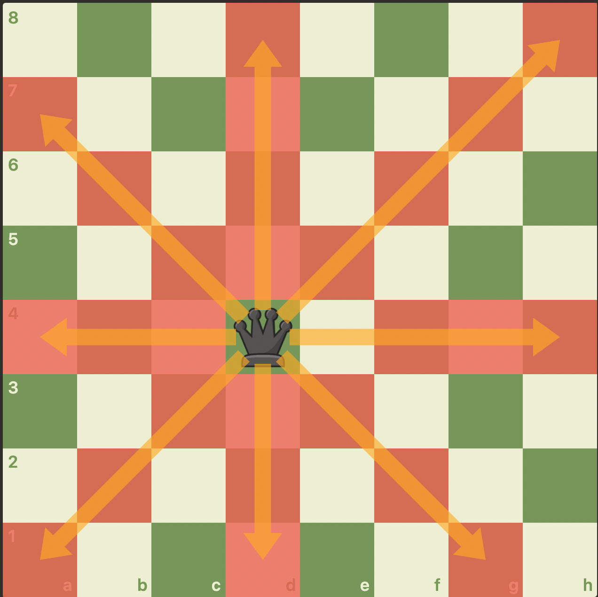
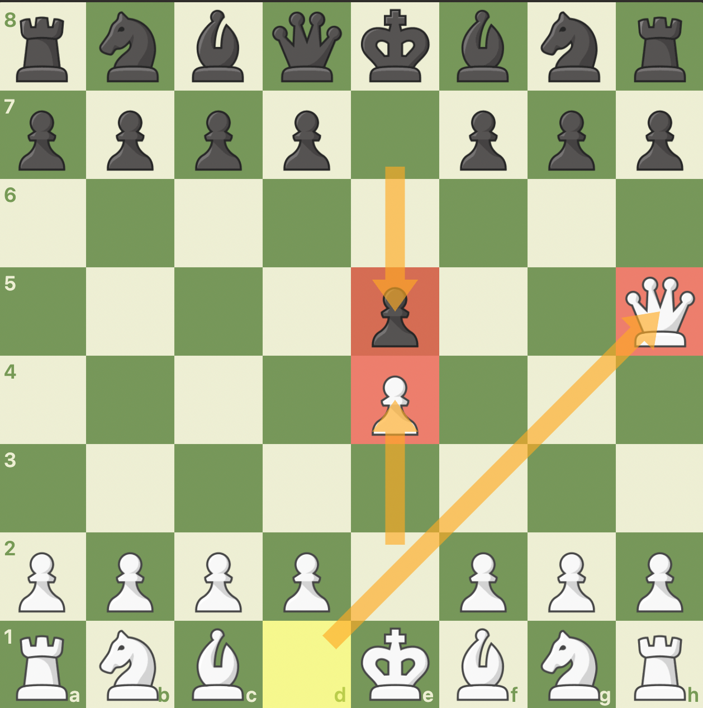

The most powerful piece in the game of chess, the Queen!
The Queen is known for two main things. Firstly, being the husband of the king, and secondly, being the most powerful piece chess! In general, chess ia a balanced game of strategy and sophistication, but the queen is what makes a game more intense and aggresive rather than positional and balanced. Despite it's strong power, it is easily accesible with the movement of the "e" pawn.
However, despite a Queen's early accesibility, attacking with a queen early is not the best idea, as it will immediatly become a target for your opponent, delaying oppurunities for strategic development and potentially trapping your Queen early on. It is better to utilize the Queen to attack after you have completed your development and secured your own King's safety. If done right, the Queen can wreck havoc upon your opponent's position.
The reason for the Queen's powerful stature is it's large mobility, in which in it's fullest extent is able to traverse the majority of the chess board, as it has the combined power of a Rook and Bishop, where it is able to move in straight lines and diagonals!
!
Because of the Queen's power, many beginners playing with white bring their Queen out early at around move 3, happening after white plays e4, then black responds with e5, and then white plays Queen to h5, which looks like this:
I personally do NOT condone this with white as it can be punished quite easily, and if you're playing with black and your opponent plays this, here's a video below made by Gothamchess that explains on how to stop these attacks easily.
If you want to learn more about the Queen, watch this video by chess.com!
Or click on the link below!
Finally, let's finish with the...